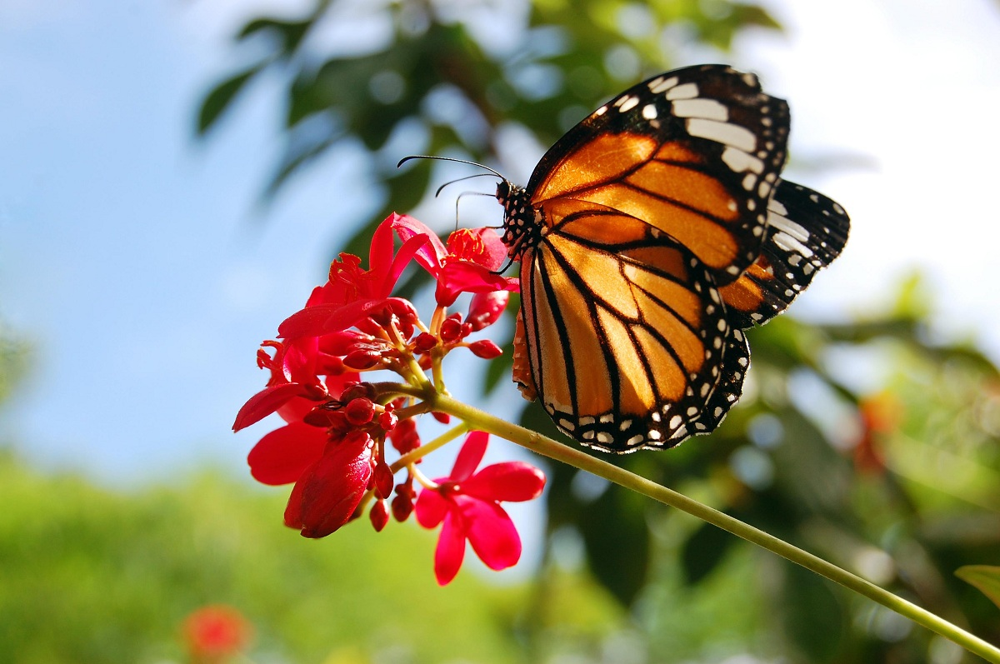
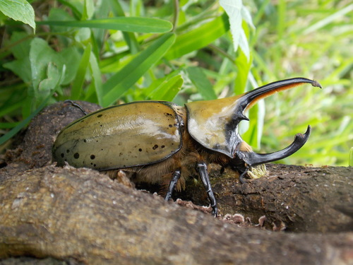
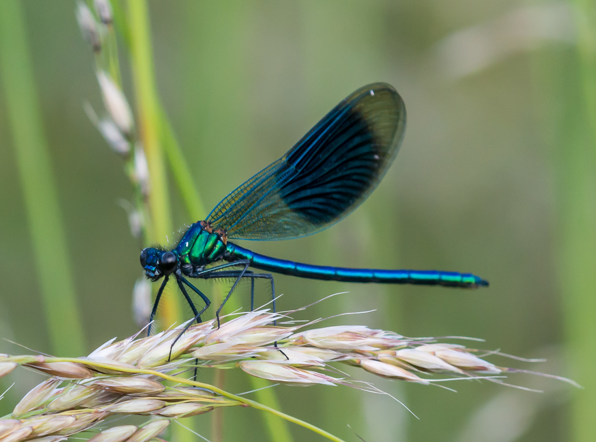
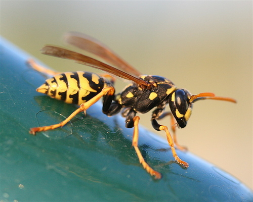
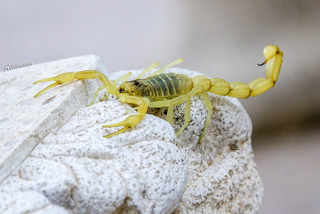
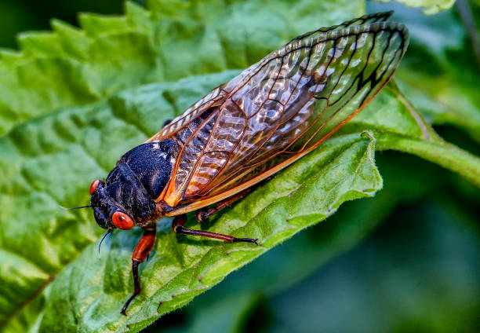
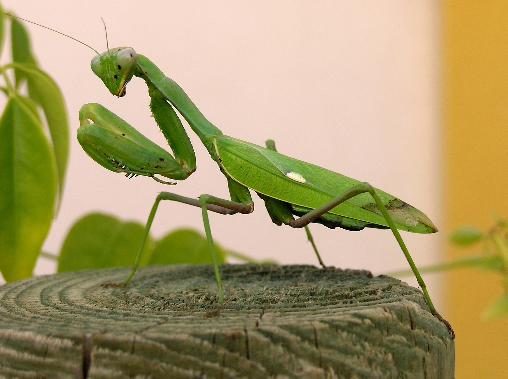
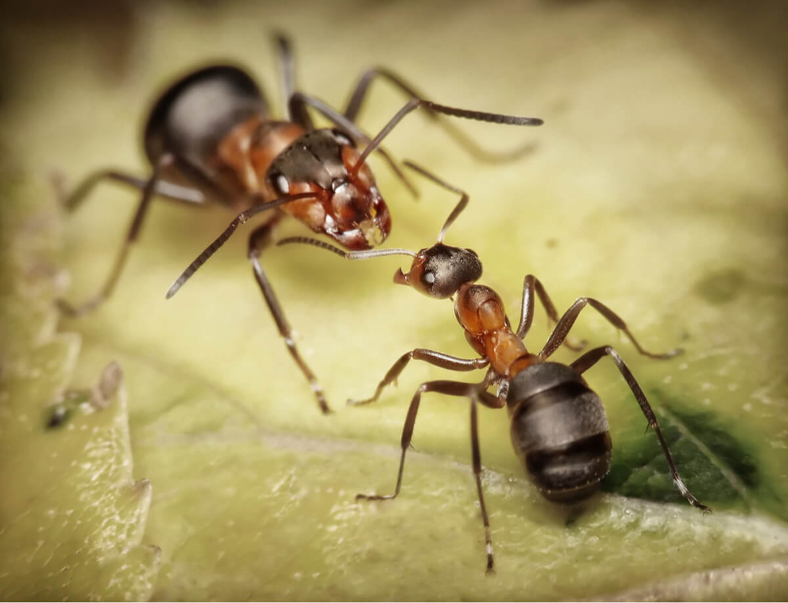
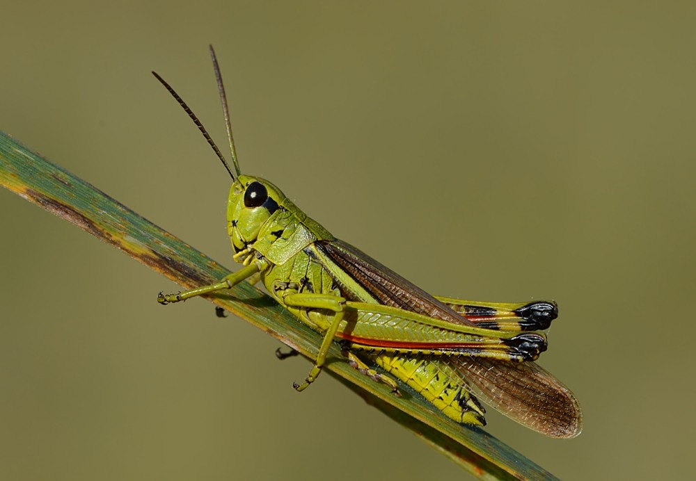
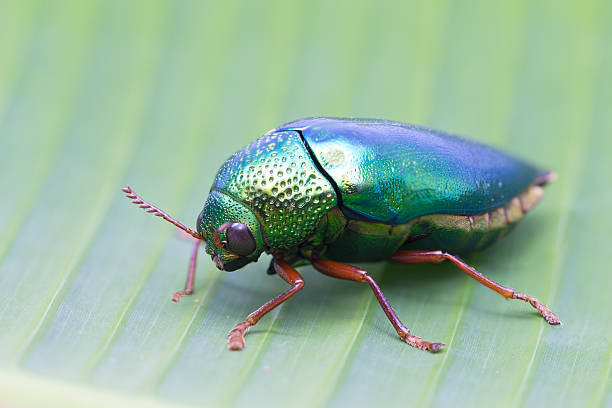

Mariposa Monarca
Elegante, ligera y viajera incansable. La mariposa monarca realiza una de las migraciones más largas del mundo y llena los cielos de color naranja.

Escarabajo Hércules
Fuerte, resistente y sorprendente. Este escarabajo puede levantar hasta 80 veces su propio peso, siendo uno de los insectos más poderosos del planeta.

Libelula Azul
Rápida, brillante y elegante. La libélula es un símbolo de transformación y puede volar en todas direcciones con gran precisión.

Catarina (Mariquita)
Colorida, tierna y beneficiosa. Se alimenta de plagas y es considerada un símbolo de buena suerte.

Avispa de Papel
Ágil, territorial y muy trabajadora. Construye nidos con fibras de madera masticada, formando estructuras sorprendentes.

Escorpión Amarillo
Silencioso, nocturno y misterioso. Aunque pequeño, es uno de los arácnidos más llamativos del desierto.

Cigarra
Ruidosa, resistente y famosa por su canto. Las cigarras pasan años bajo tierra antes de salir a cantar en verano.

Mantis Religiosa
Ágil, paciente y con reflejos impresionantes. La mantis es una cazadora experta que se mueve con una precisión casi hipnótica.

Luciernaga
Pequeña, mágica y luminosa. La luciérnaga emite luz natural gracias a un proceso llamado bioluminiscencia. En las noches cálidas, ilumina los campos con destellos que parecen estrellas moviéndose entre la hierba.

Hormiga Soldado
Pequeña pero poderosa. Las hormigas soldado trabajan en equipo, defienden su colonia y pueden cargar objetos varias veces más grandes que ellas.

Grillo Común
Saltador, nocturno y musical. Su canto es símbolo de tranquilidad en las noches cálidas.

Escarabajo Joya
Brillante, metálico y sorprendente. El escarabajo joya destaca por sus colores iridiscentes que cambian con la luz. Es un insecto tranquilo que vive entre hojas y flores, y es considerado uno de los más hermosos del mundo.